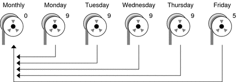
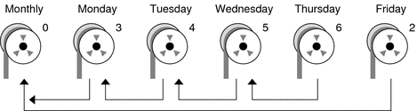

|
|||||||||||||||||||||||||||||||||||||||||||||||||||||||||||||||||||||||||||||||||||||||||||||||||||||||||||||||||||||||||||||||||||||||||||||||||||||||||||||||||||||||||||||||||||||||||||||||||||||||||||||||||||||||||||||||||||||||||||||||||||||||||||||||||||||||||||||||||||||||||||||||||||||||||||||||||||||||||||||||||||||||||||||||||||||||||||||||||||||||||||||||||||||||||||||||||||||||||||||||||||||||
|
1. Managing Removable Media (Overview) 2. Managing Removable Media (Tasks) 3. Accessing Removable Media (Tasks) 4. Writing CDs and DVDs (Tasks) 5. Managing Devices (Overview/Tasks) 6. Dynamically Configuring Devices (Tasks) 7. Using USB Devices (Overview) 9. Using InfiniBand Devices (Overview/Tasks) 11. Administering Disks (Tasks) 12. SPARC: Adding a Disk (Tasks) 13. x86: Adding a Disk (Tasks) 14. Configuring Solaris iSCSI Targets and Initiators (Tasks) 15. Configuring and Managing the Solaris Internet Storage Name Service (iSNS) 16. The format Utility (Reference) 17. Managing File Systems (Overview) 18. Creating UFS, TMPFS, and LOFS File Systems (Tasks) 19. Mounting and Unmounting File Systems (Tasks) 20. Using The CacheFS File System (Tasks) 21. Configuring Additional Swap Space (Tasks) 22. Checking UFS File System Consistency (Tasks) 23. UFS File System (Reference) 24. Backing Up and Restoring File Systems (Overview) Where to Find Backup and Restore Tasks Introduction to Backing Up and Restoring File Systems 25. Backing Up Files and File Systems (Tasks) 26. Using UFS Snapshots (Tasks) 27. Restoring Files and File Systems (Tasks) 28. UFS Backup and Restore Commands (Reference) 29. Copying UFS Files and File Systems (Tasks) |
High-Level View of Backing Up and Restoring File Systems (Task Map)Use this task map to identify all the tasks for backing up and restoring file systems. Each task points to a series of additional tasks, such as determining the type of backup to perform.
Considerations for Scheduling BackupsA backup schedule is the schedule that you establish to run the ufsdump command. This section identifies considerations to think about when you create a backup schedule. This section also includes sample backup schedules. The backup schedule that you create depends on the following:
How Often Should You Do Backups?If you do not need to minimize time requirements and the number of media that is used for backups, you can do full backups every day. However, this backup method is not realistic for most sites, so incremental backups are used most often. In this case, you should back up your site enough to so that you can restore files from the last four weeks. This schedule requires at least four sets of tapes, one set for each week. You would then reuse the tapes each month. In addition, you should archive the monthly backups for at least a year. Then, keep yearly backups for a number of years. Backup Interval Terms and DefinitionsThe following table describes backup interval terms and definitions.
Guidelines for Scheduling BackupsThe following table provides guidelines for scheduling backups. For additional backup schedule considerations, see Considerations for Scheduling Backups. Table 24-6 Guidelines for Backup Schedules
Using Dump Levels to Create Incremental BackupsThe dump level you specify in the ufsdump command (0–9) determines which files are backed up. Dump level 0 creates a full backup. Levels 1–9 are used to schedule incremental backups, but have no defined meanings. Levels 1–9 are just a range of numbers that are used to schedule cumulative or discrete backups. The only meaning levels 1–9 have is in relationship to each other, as a higher or lower number. A lower dump number always restarts a full or a cumulative backup. The following examples show the flexibility of the incremental dump procedure using levels 1–9. Example—Dump Levels for Daily, Cumulative BackupsDoing daily, cumulative incremental backups is the most commonly used backup schedule and is recommended for most situations. The following example shows a schedule that uses a level 9 dump Monday through Thursday, and a level 5 dump on Friday restarts process. Figure 24-1 Incremental Backup: Daily CumulativeIn the preceding example, you could have used other numbers in the 1–9 range to produce the same results. The key is using the same number Monday through Thursday, with any lower number on Friday. For example, you could have specified levels 4, 4, 4, 4, 2 or 7, 7, 7, 7, 5. Example—Dump Levels for Daily, Incremental BackupsThe following example shows a schedule where you capture only a day's work on different tapes. This type of backup is referred to as a daily, incremental backup. In this case, sequential dump level numbers are used during the week (3, 4, 5, 6) with a lower number (2) on Friday. The lower number on Friday restarts the processing. Figure 24-2 Incremental Backup: Daily IncrementalIn the preceding example, you could have used the sequence 6, 7, 8, 9 followed by 2, or 5, 6, 7, 8 followed by 3. Remember, the numbers themselves have no defined meaning. You attribute meaning by ordering them in a specified sequence, as described in the examples. Sample Backup SchedulesThis section provides sample backup schedules. All schedules assume that you begin with a full backup (dump level 0), and that you use the -u option to record each backup in the /etc/dumpdates file. Example—Daily Cumulative, Weekly Cumulative Backup ScheduleTable 24-7 shows the most commonly used incremental backup schedule. This schedule is recommended for most situations. With this schedule, the following occurs:
Table 24-7 Daily Cumulative/Weekly Cumulative Backup Schedule
The following table shows how the contents of the tapes can change across two weeks with the daily cumulative, weekly cumulative schedule. Each letter represents a different file. Table 24-8 Contents of Tapes for Daily Cumulative/Weekly Cumulative Backup Schedule
Tape Requirements for the Daily Cumulative, Weekly Cumulative ScheduleWith this schedule, you need six tapes if you want to reuse daily tapes. However, you need nine tapes if you want to use four different daily tapes:
If you need to restore a complete file system, you need the following tapes:
Example—Daily Cumulative, Weekly Incremental Backup ScheduleThe following table shows a schedule where each weekday tape accumulates all files that changed since the beginning of the week, or the initial level 0 backup for the first week. In addition, each Friday's tape contains all the files that changed that week. Table 24-9 Daily Cumulative, Weekly Incremental Backup Schedule
The following table shows how the contents of the tapes can change across two weeks with the daily cumulative, weekly incremental backup schedule. Each letter represents a different file. Table 24-10 Contents of Tapes for Daily Cumulative, Weekly Incremental Backup Schedule
Tape Requirements for the Daily Cumulative, Weekly Incremental Backup ScheduleWith this schedule, you need six tapes if you want to reuse daily tapes. However, you need nine tapes if you want to use four different daily tapes:
If you need to restore a complete file system, you need the following tapes:
Example—Daily Incremental, Weekly Cumulative Backup ScheduleThe following table shows a schedule where each weekday tape contains only the files that changed since the previous day. In addition, each Friday's tape contains all files changed since the initial level 0 backup at the beginning of the month. Table 24-11 Daily Incremental, Weekly Cumulative Backup Schedule
The following table shows how the contents of the tapes can change across two weeks with the daily incremental, weekly cumulative schedule. Each letter represents a different file. Table 24-12 Contents of Tapes for Daily Incremental, Weekly Cumulative Backup Schedule
Tape Requirements for Daily Incremental, Weekly Cumulative ScheduleWith this schedule, you need at least 9 tapes if you want to reuse daily tapes, which is not recommended. Preferably, you need 21 tapes if you save weekly tapes for a month: one tape for the level 0, 4 tapes for the Fridays, and 4 or 16 daily tapes.
If you need to restore the complete file system, you need the following tapes:
Example—Monthly Backup Schedule for a ServerThe following table shows an example backup strategy for a heavily used file server on a small network where users are doing file-intensive work, such as program development or document production. This example assumes that the backup period begins on a Sunday and consists of four seven-day weeks. Table 24-13 Example of Monthly Backup Schedule for a Server
With this schedule, you use 4n tapes, the number of tapes needed for 4 full backups of the root (/), /usr, /export, and /export/home file systems. Also, you need 24 additional tapes for the incremental backups of the /export/home file systems. This schedule assumes that each incremental backup uses one tape and that you save the tapes for a month. Here's how this schedule works:
|
||||||||||||||||||||||||||||||||||||||||||||||||||||||||||||||||||||||||||||||||||||||||||||||||||||||||||||||||||||||||||||||||||||||||||||||||||||||||||||||||||||||||||||||||||||||||||||||||||||||||||||||||||||||||||||||||||||||||||||||||||||||||||||||||||||||||||||||||||||||||||||||||||||||||||||||||||||||||||||||||||||||||||||||||||||||||||||||||||||||||||||||||||||||||||||||||||||||||||||||||||||||
|